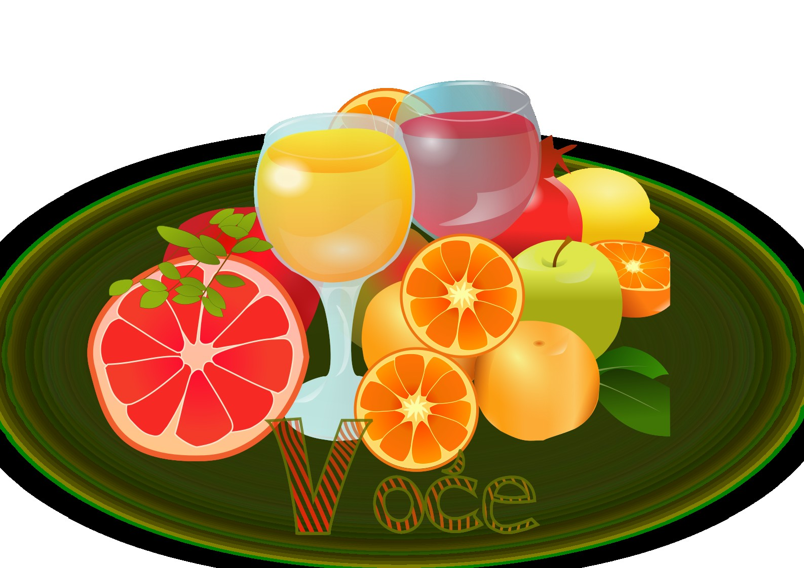
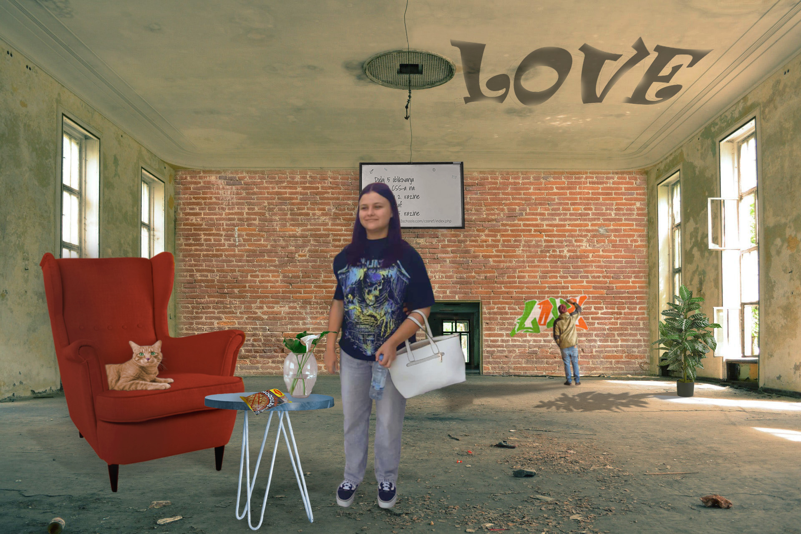
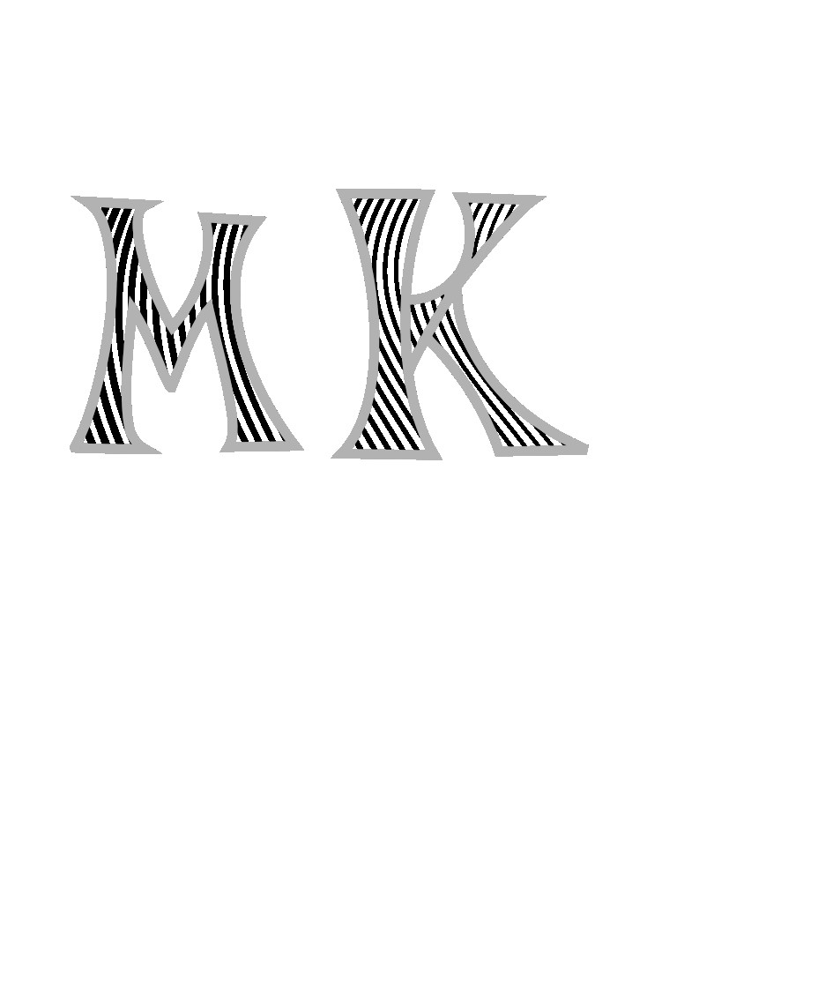
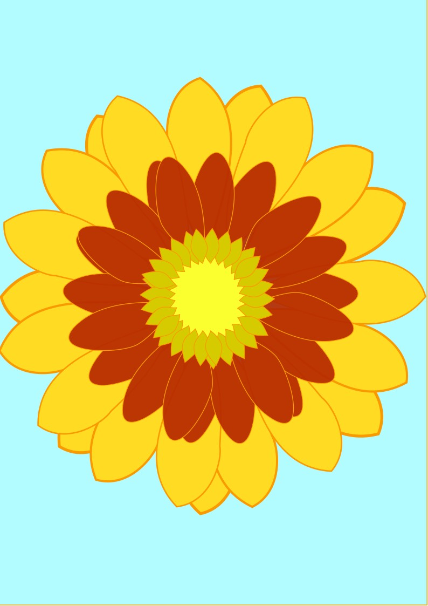
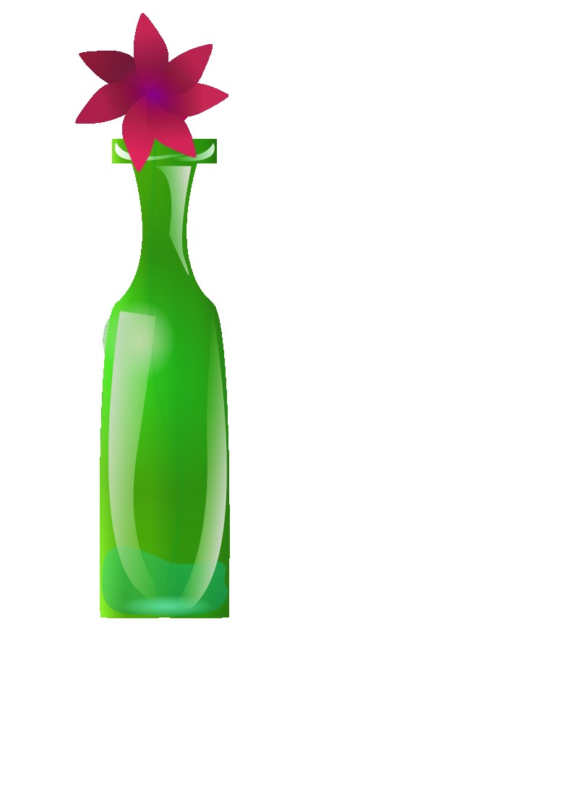
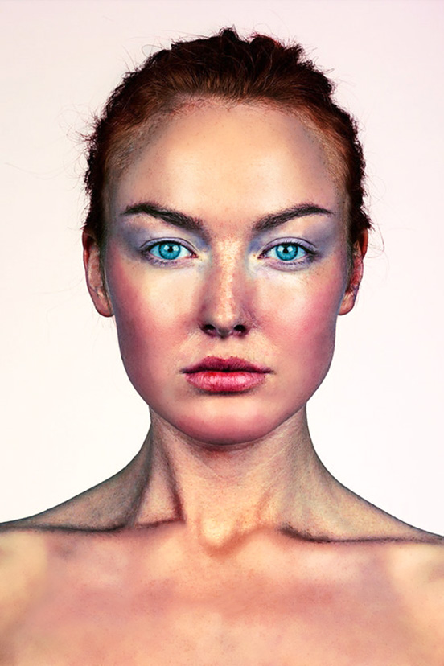
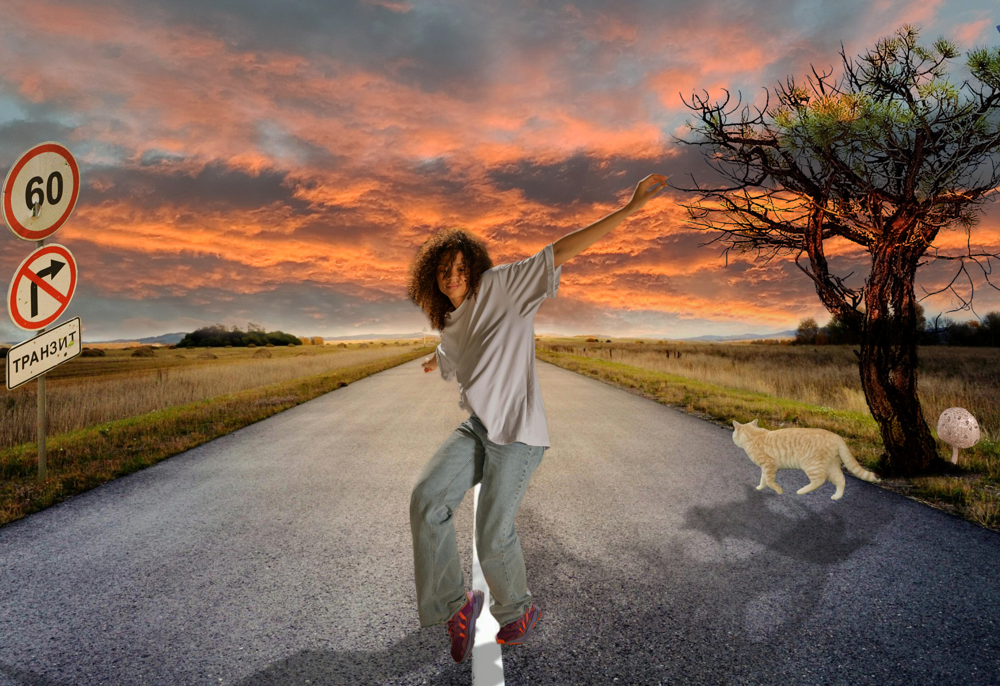
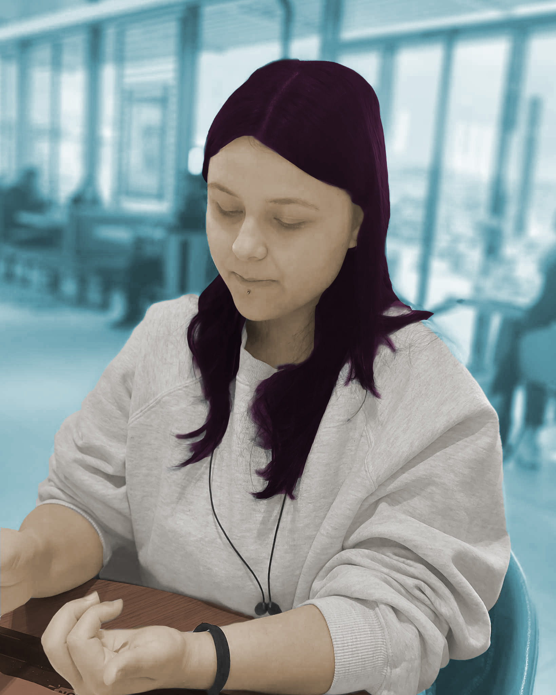

Vježbe
Vježba 1
U ovom zadatku je bilo potrebno u Inkscapeu pomoću alata za crtanje Bezierovih krivulja iscrtati sliku prema zadanom predlošku tako da se upotrijebe svi elementi zadani u tablici koju smo dobili. U sliku je bilo potrebno smisleno uklopiti riječ „Voće“ koje smo kreirali s vlastitim fontom. Unutar fonta se interpoliraju linije čije boje u gradijentu smo birali sami tako da boje krivulja prate ugođaj boja sa slike. Interpolacija/Blend se može koristiti i na drugim zadanim elementima.
Vježba 2
Bilo je potrebno kreirati sliku u Adobe Photoshopu kompoziciju više fotografija koristeći tehnike retuširanja, fotomontaže i koloriranja. Zadatak je bio koristiti jednu sliku kao bazu de odabrati minimalno 5 ponuđenih slika i minimalno 3 naše te iz njih djelove kopirati u uvrstiti u bazu.
Vježba 3
Ovdje smo trebali keirati proizvoljan broj vlastitih krivulja čije su točke poravnate prema mreži vašeg koordinatnog sustava, definirajte im boju i debljinu obruba te između njih napravite interpolaciju (Blend). Koristeći vlastiti font preko krivulja ispišite tekst i od njega smo trebali napraviti masku. Također je bilo potrebno voditi računa o veličini teksta i njegovom položaju u odnosu na krivulje kako bi se maska što bolje vidjela.
Vježba 4
U novom dokumentu je bilo potrebno izvesti vlastiti primjer sa multipliciranim objektima nacrtanima sa alatom Pen. Objekte smo crtali ili kao konture odabrane slike predloška ili slobodno nacrtanima bez predloška. Bilo je potrebno tehnikama kopiranja tipkom Alt (Duplicate) više puta kopirati oblike, aplicirati drugačijim bojama kreiranim u novoj Color grupi (Swatch) sa barem pet nših boja. Koristiti rotacije, scale, transparenciju, multipliciranje oblika… Vježba se ordađivala u Inkscapeu.
Vježba 5
U programu Inkscape je bilo potrebno kreirati vlastiti složeni objekt u kojem ću korisiti tehnike spajanja i izrezivanja objekata i primijeniti različite vrste gradijenata i transparencije.
Vježba 6
U ovom zadatku je bilo potreno koristiti tehnike digitalnog retuširanja fotografija za postizanje realističnog efekta pomoći selekcije (Lasso Tool). To sam postigla uklanjanjem nedostataka na slici, zamućivanjem (Dust&Scratches, Median, kloniranjem (Clone Stamp, Heal, Burn/Dodge brush, Levels, Brightness/Contrast). Vježba se odrađivala u Photoshopu.
Vježba 7
Ovu fotomontažu sam napravila tako da sam obradila sliku na način da sam u bazu umetala izrezane lemente iz ostalih fotografija, koristeći SVE tehnike opisane u video koji smo dobili i pisanim uputama. Dodala sam tri elementa iz vlastitih fotografija te sam korigirala boje za usklađenje sa originalnom scenom ili stvoriti drugačije efekte. Ova vježba se također odrađivala u Photoshopu.
Vježba 8
Uzela sam besplatni video sa googla te ga obradila kao kinemagraf. Kinemagraf ili eng. cinemagraph je video isječak čija se sekvenca ponavlja u beskonačnost, najčešće u GIF formatu, a u kompoziciji spaja pokretnu i statičnu grafiku (sliku i video). Ovu vježbu sam odrađivala u Shotcut-u.

Vježba 9
U Photoshopu tehnikom neinvazivnog koloriranja slike bilo je potrebno našu crno-bijelu sliku opet obojati u vratiti joj boju. Selekcijom željenih dijelova slike stvaramo maske kojima otkrivamo efekte kolorizacije. Boja se aplicira na zaseban sloj (layer) kako ne bismo uništili originalne tonove i kako bismo mogli lakše napraviti promjene u kasnijim fazama obrade slike. Selekcije smo izvodili i popravljaji ručno kako bi što preciznije izdvojili željenu boju iz pozadine jer o tome najviše ovisi kvaliteta slike.
Vježba 10
U ovom sam zadatku izrezala tri video isječka na drugačiji način nego što je opisano u uputama, dodala sam im tri nova efekta (blure, ubrzanje videa i hue) te jedan statični i jedan pomični tekst na različitim pozicijama.Ovu vježbu sam također odrađivala u Shotcut-u.